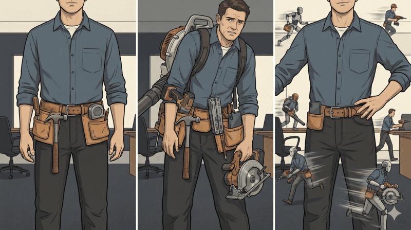
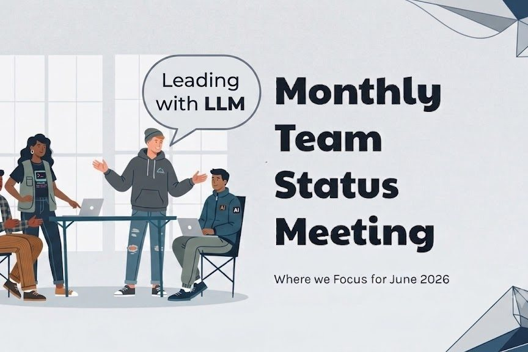
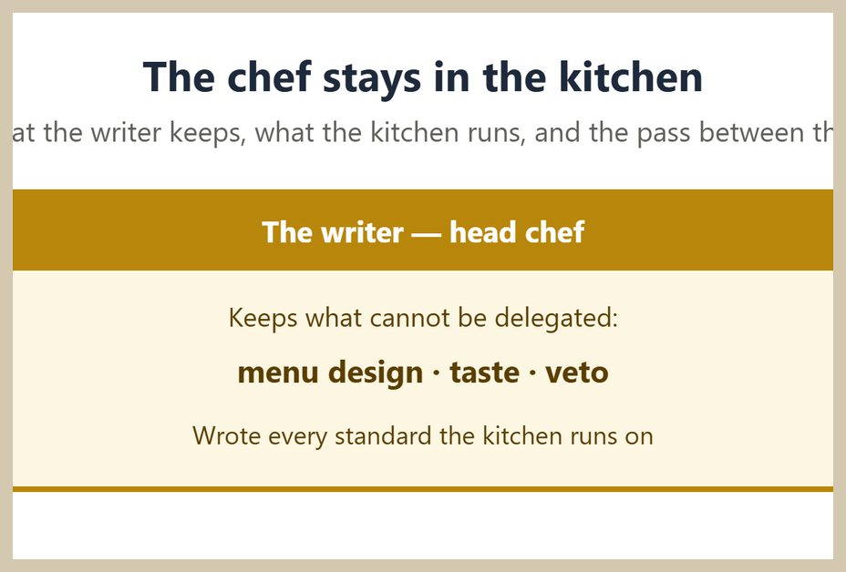

I run research and writing with an LLM the way you run a team — full time and at full depth. Almost nobody needs to work the way I do. But leading the work this way has taught me a lot that carries over: the habits, the techniques, and how these tools actually behave.
Work that holds up across days and many sessions comes from directing the model the way you would direct people: you set the direction, you review the work critically, and you make the final calls. Each piece below shows the practice in a form you can read, run, or check for yourself.

The thesis
A team you have to build and lead
This article draws on experiences going back to the fall of 2024 through the current state in the middle of 2026. It traces five phases, from treating the model as fancy search to leading it like a group of capable people who need direction. It is specific about what went wrong along the way: the thread that agreed with everything, the drafts that echoed the last thing said.
- A Team You Have to Build and Lead — the five-phase argument in full

The habits
The Interns
A series on running the team well, one leadership practice and one technique per episode. "Red Team" is the first: when the work is not landing the way you want, you bring in a second model for a fresh set of eyes and point it at the first model's work. The story shows adversarial review as a normal habit, the kind the model makes easy once you are directing it rather than taking its first answer. That first answer is often confident and wrong. New episodes are added as they are written.
- The Interns — Red Team — the practice, step by step

The case for a platform
When Even the Best Prompt Isn't Enough
Features like Projects, Skills, instruction blocks, and memory are all worth knowing. A process that holds up under sustained work, with an audit trail, needs a framework behind it. This paper makes the case that most of us use these tools well and still leave most of their power on the table.
- When Even the Best Prompt Isn't Enough — the full argument

Learning to operate the tool
Claude for Research — Learn to use the Stick
Most chat tools are automatics; the most capable one asks you to drive. The guide teaches how to operate Claude deliberately, and why that reaches results one-shot prompting cannot.
- Claude for Research — Learn to use the Stick — the full guide

The working tool
Ship a real deck this week
A free setup guide for one recurring job: the monthly team-meeting deck. You spend about twenty minutes wiring it up once, and after that the model gathers the updates and drafts the slides while you decide what the meeting is actually about. The guide is firm on the line that matters. The model finds and writes. You own the story. It is the fastest way to feel the difference between asking a tool for output and directing one.
- Monthly Team Meeting Deck — An AI Setup Guide — a twenty-minute setup, then a repeatable process

The method, demonstrated
Watch the method work
Think of it as a casting call. One part, three actors reading the same lines, two of them fresh off the bus that week. You are in the director's chair. You give the same brief to each, watch the reads side by side, and coach toward the take that lands. The part goes to the best read, not the biggest name or the newest face. A cost breakdown runs alongside, so you can see what the performance was worth. The published post came out of exactly this, unchanged, and you can watch every take, including the ones that fell flat.
- The Chef Post — the published piece, plus the three-model comparison, drafts, and cost analysis behind it